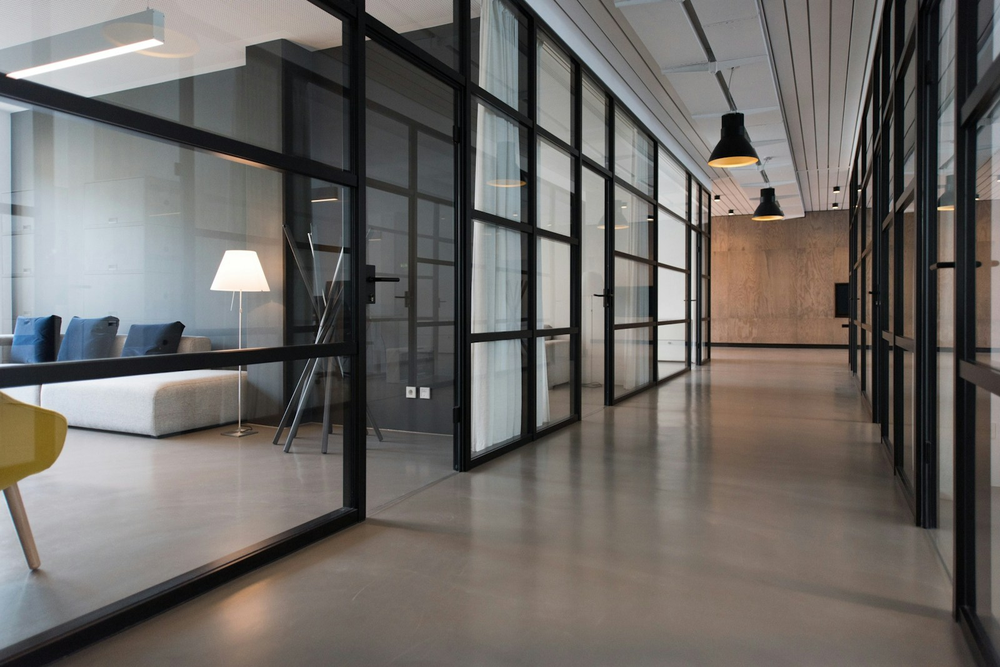

01
Sprawy rodzinne
Wsparcie w rozmowach, przygotowaniu pism i prowadzeniu spraw związanych z relacjami rodzinnymi oraz ich uporządkowaniem.
- Rozwód i separacja
- Sprawy dotyczące dzieci
- Rozliczenia majątkowe
Za każdą sprawą stoi czyjeś życie, firma lub przyszłość. Pomagam uporządkować sytuację i znaleźć przemyślaną drogę dalej.

Nie musisz znać przepisów, żeby dobrze opowiedzieć o swoim problemie.
Nazywam się Adam Rudzki. W centrum mojej pracy stawiam człowieka i to, co naprawdę jest dla niego ważne. Zanim zaproponuję rozwiązanie, chcę zrozumieć sytuację, cele i obawy.
Wyjaśniam możliwe scenariusze, porządkuję informacje i przedstawiam kolejne kroki. Bez niepotrzebnego żargonu i bez obietnic wyniku, którego nikt nie może zagwarantować.
Wybierz obszar, który jest Ci najbliższy.
Dokładny zakres ustalimy po rozmowie.
Wsparcie w rozmowach, przygotowaniu pism i prowadzeniu spraw związanych z relacjami rodzinnymi oraz ich uporządkowaniem.
Pomoc w zrozumieniu sytuacji majątkowej, analizie dokumentów i przygotowaniu planu dalszych działań.
Analiza problemu, dokumentów i możliwych sposobów zakończenia sporu — na etapie rozmów lub postępowania.
Nie każda sprawa potrzebuje
głośnych słów.
Każda potrzebuje uwagi.
Współpraca zaczyna się od uporządkowania sprawy.
Kolejne kroki ustalamy wspólnie.
Opowiadasz o sytuacji i swoich oczekiwaniach. Ustalamy, jakie informacje będą potrzebne do dalszej analizy.
SŁUCHAM / PYTAM / PORZĄDKUJĘPrzyglądam się dokumentom i okolicznościom. Wyjaśniam dostępne kierunki działania oraz istotne ograniczenia.
WYJAŚNIAM / OCENIAM / PLANUJĘPrzed rozpoczęciem prac ustalamy ich zakres, sposób komunikacji i indywidualne wynagrodzenie.
KONKRETNY ZAKRES / JASNE USTALENIARealizuję uzgodniony plan i informuję o rozwoju sprawy. Ważne decyzje podejmujesz, znając ich kontekst.
DZIAŁAM / INFORMUJĘ / WSPIERAMWarto natomiast zebrać to, co pomoże nam dobrze zrozumieć sprawę.
01 Krótki opis sytuacji i najważniejszych wydarzeń
02 Dokumenty i dotychczasowa korespondencja
03 Informacje o otrzymanych pismach i terminach
04 Pytania, obawy i oczekiwany cel rozmowy
Dobry początek to mniej niewiadomych.
Oto kilka informacji organizacyjnych.
W tej koncepcji kancelarii przewidziano zarówno spotkania w biurze, jak i rozmowy online. Formularz pozwala wybrać preferowaną formę konsultacji.
Nie. Możesz wybrać konsultację ogólną. Pierwsza rozmowa służy również uporządkowaniu sytuacji i ustaleniu właściwego zakresu pomocy.
Indywidualnie, po poznaniu sprawy i oczekiwanego zakresu pracy. Przed rozpoczęciem współpracy ustalane są zasady rozliczenia i sposób postępowania przy dodatkowych pracach.
Nie składam obietnic konkretnego rozstrzygnięcia. Ważne są rzetelna analiza, omówienie możliwości i ryzyk oraz staranne prowadzenie uzgodnionych działań.
To projekt koncepcyjny fikcyjnej kancelarii. Formularz tworzy lokalne podsumowanie, które można pobrać. Nie wysyła danych, nie nawiązuje współpracy z adwokatem ani nie rezerwuje rzeczywistego terminu.
Wybierz obszar i formę spotkania.
Pierwszym krokiem może być po prostu rozmowa.
ul. Spokojna 18, lok. 4
00-000 Warszawa
kancelaria@rudzki.example
000 000 000
Poniedziałek – piątek
09:00 – 17:00
Spotkania po wcześniejszym uzgodnieniu.